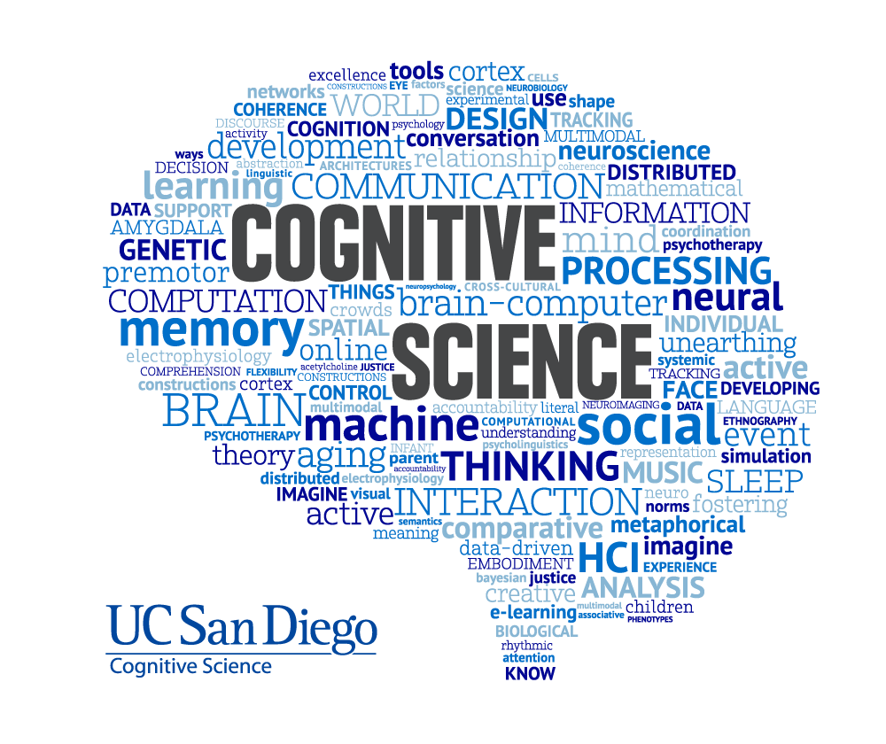

UC San Diego | Mar. 2026 – Present
As an Undergraduate Cognitive Science Researcher at UC San Diego, I conduct independent research under Professor Steven Barrera, applying machine learning and cognitive science principles to analyze baseball player evaluation and performance. My work integrates vision, neuroscience, and embodied cognition to better understand how athletes process pitch-level information and make real-time decisions. Through this role, I have developed skills in research design, interdisciplinary modeling, and translating analytical findings into actionable insights for academic and applied sports contexts. I was selected for this position by the COGS Director Mr. Andrew Cronan in efforts to help the Head Chair of Cognitive Science Dr. Bradley Voytek establish UC San Diego's Future Sports Management Program. I communicate my independent data reports to him while also sharing my experience as a college-student working in a sports organization.
UC San Diego Baseball | Jan. 2026 – Present
As a Data Scientist for UC San Diego’s NCAA Division I Baseball program, I build end-to-end machine learning pipelines in Python to process and analyze TrackMan pitch-level data from live games and practices. I work closely with the UCSD Baseball coaching staff including Head Coach Eric Newman, Pitching Coach Matt Harvey and Head of UCSD Baseball analytics Ryan Bobb. I applied Random Forests and Logistic Regression to model pitch release mechanics and quantify consistency through the TriKirby Index, a custom command metric used for player evaluation. I also build data visualizations of our player's performance, then explain these technical, github/python based workflows so that our players and coaches have a quantifiable interpretation on how they can improve their play towards achieving our goals of winning the NCAA D1 Big West Conference. This work improved interpretability in pitching analytics and provided coaches with data-driven insights for player development, pitch design, and game strategy.
UC San Diego Baseball | Oct. 2025 – Present
As a Data Analyst for UC San Diego Baseball, I collect, process, and analyze pitch-level data using TrackMan OS on-site during practices, scrimmages, and official NCAA games. I help ensure data integrity across release, location, and pitch-tracking metrics that support downstream analytics workflows. I collaborate with coaches and analysts to translate data into scouting reports, player development insights, and performance visualizations. I collect trumedia data and opposing team roster reports which is utilized by our coaching staff during games.
Artificial Intelligence Student Collective (AISC) University of California, San Diego | Dec. 2025 – Present
As an Applied AI Project Lead for Artifical Intelligence Student Collective (AISC) of UC San Diego, I lead end-to-end machine learning projects from problem formulation to prototype development. I personally interview and select UC San Diego students who are interested in joining the long-term projects design, collaborating in multiple divisions of the pipeline process. I manage a team of ML engineers and UI/UX designers while guiding the full pipeline process, including data collection, preprocessing, feature engineering, model training, evaluation, and presentation. This role has strengthened my skills in Python, PyTorch, scikit-learn, project management, and technical communication, while allowing me to help build user-centered AI solutions that make artificial intelligence more practical and accessible for real-world impact.
TritonBall Sports Analytics | May 2025 – Present
As a Machine Learning Research Analyst for TritonBall Sports Analytics, I develop data-driven baseball research articles that combine machine learning, statistical modeling, and sports analytics. My work includes building end-to-end Python pipelines, engineering features from player and pitch-level data, applying models such as PCA and K-Means, and creating visualizations with Pandas, Matplotlib, and Seaborn. Through published research articles, I translate technical machine learning findings into accessible baseball analytics insights for the broader sports community on Medium.com.
TriCore Medical Supply | May 2025 – Present
I was a Warehouse Team Member and Delivery Driver for TriCore Medical Supply based in Pittsburg, CA. I worked in the warehouse loading vans full of various hospice care materials. These supplies include adult diapers, chux, wipes, latex gloves, etc. I then drove these vans to various houses, pharmacies, hospice facilites, memory care, and nursing homes, and hospitals. Our network spanned all across NorCal, reaching locations in the Bay Area, Central Valley, and Santa Cruz.
UC San Diego Housing, Dining, and Hospitality | Sept. 2022 – Feb. 2025
As a Dining Hall Student Worker at UC San Diego, I contributed to daily operations within a high-volume service environment, supporting food preparation, customer service, and team coordination. I developed strong communication and teamwork skills by working in fast-paced settings while maintaining efficiency and attention to detail. This experience reinforced my ability to collaborate effectively, adapt quickly, and deliver consistent service under pressure.
Popeyes Louisiana Kitchen | Jun. 2023 – Jul. 2023
As a Restaurant Crew Member, I worked in a fast-paced team environment handling food preparation, order fulfillment, and customer interactions. I strengthened my ability to communicate clearly, multitask efficiently, and maintain high performance under time constraints. This role developed my adaptability and work ethic in high-pressure operational settings.
DoorDash | Oct. 2022 – Jan. 2023
As a Food Delivery Driver, I managed independent delivery operations, optimizing routes and schedules to ensure timely service. This role required strong time management, accountability, and problem-solving skills while working autonomously. I developed discipline and consistency in meeting performance expectations without direct supervision.